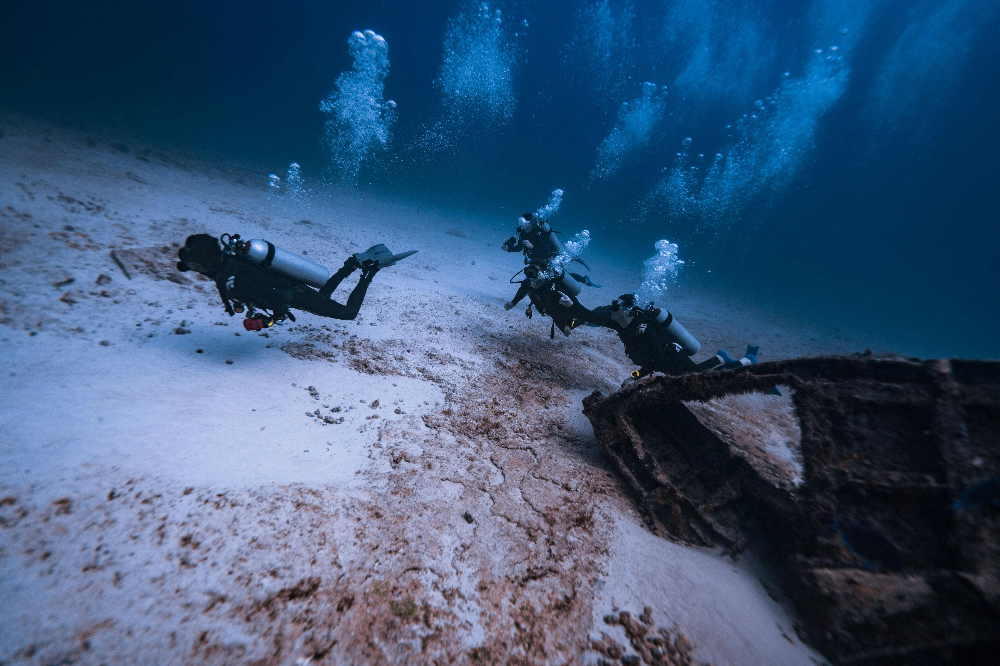
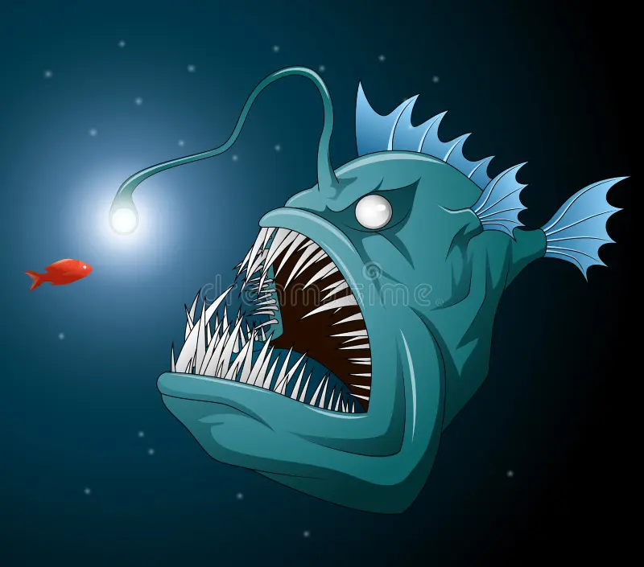
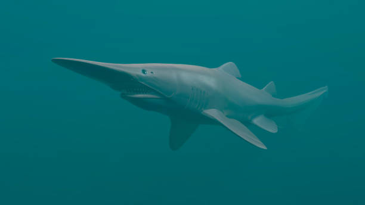

The Deep Sea: Unexplored Worlds
The deep sea, often referred to as the last frontier on Earth, remains one of the most mysterious and least explored parts of our planet. Covering over 60% of the Earth's surface, the deep sea is a world far beyond the reach of sunlight, where the pressure is immense, and temperatures are near freezing. Despite being so vast, the deep sea is poorly understood, with much of it still unmapped and unexplored.

Adaptations of Deep Sea Creatures
Creatures of the deep sea are nothing short of extraordinary. Life in these depths has evolved unique adaptations to survive in extreme conditions. Some of these adaptations include:
- Bioluminescence: Many deep-sea creatures can produce their own light. This helps them attract prey, communicate, or avoid predators. For example, the lanternfish uses bioluminescence to light up its surroundings and avoid being eaten.
- Extreme Pressure Resistance: The deep sea can have pressures over 1,000 times that of the Earth's surface. Creatures like the giant squid or anglerfish have evolved flexible, soft bodies that can withstand the crushing pressure.
- Slow Metabolism: With limited food in the deep sea, many creatures have adapted by slowing down their metabolism, allowing them to survive on minimal energy. The bioluminescent anglerfish, for example, can go without food for long periods.
- Enhanced Sensory Systems: Due to the lack of light, many creatures have highly developed senses of touch, taste, and smell to locate food and communicate. Some use echolocation, like certain species of whales, to navigate in the dark waters.

Fascinating Deep Sea Discoveries
Over the years, explorers have uncovered some of the most remarkable creatures and phenomena in the deep sea. Among the most fascinating discoveries are:
- The Deep Sea Vents: In 1977, scientists discovered hydrothermal vents in the deep ocean. These vents, spewing out superheated water and minerals, are home to entire ecosystems that do not rely on sunlight. Instead, they thrive on chemosynthesis, where bacteria use the chemicals from the vents as a food source.
- The Dumbo Octopus: This adorable creature, named for its large, ear-like fins that resemble the famous Disney character, was found in the deep sea. It is known for its graceful, jellyfish-like movements and can survive at extreme depths.
- The Goblin Shark: Often referred to as a "living fossil," the goblin shark's long, flat snout and elastic jaw are just some of the bizarre features that make this creature one of the most interesting deep-sea discoveries.
- The Mariana Trench: The deepest part of the world's oceans, the Mariana Trench, reaches depths of about 36,000 feet (10,994 meters). In 2012, filmmaker James Cameron made a solo journey to the bottom of the trench, bringing back footage and new knowledge about this mysterious world.

Challenges in Deep Sea Exploration
Exploring the deep sea is not without its challenges. Here are some of the hurdles scientists face:
- Immense Pressure: The pressure in the deep sea can crush submersibles and other exploration vehicles. To withstand these pressures, specialized technology must be built with durable materials like titanium.
- Darkness: Without sunlight, visibility is virtually nonexistent. Deep-sea exploration relies on artificial lighting and advanced technology like sonar to navigate and map the ocean floor.
- Cost and Accessibility: Deep-sea expeditions are expensive, requiring cutting-edge technology and specialized ships. Many exploration missions are limited by the funds available, which restricts the ability to study the vast areas of the deep sea.
- Hostile Environment: The extreme cold, crushing pressure, and darkness make the deep sea an extremely harsh environment for both equipment and life. Designing robots and remotely operated vehicles (ROVs) that can handle these conditions is no small feat.
How Technology is Advancing Our Understanding
Advances in technology are slowly unlocking the secrets of the deep sea. Some notable breakthroughs include:
- ROVs and AUVs: Remotely operated vehicles (ROVs) and autonomous underwater vehicles (AUVs) are now equipped with high-definition cameras, sonar, and sensors that help map and study the deep sea. These robots can dive to extreme depths and send back data without the need for human divers.
- Deep-Sea Drones: Drones designed specifically for deep-sea exploration have revolutionized the way scientists study the ocean. These drones are equipped with powerful lights, cameras, and even robotic arms to take samples of the ocean floor.
- Sonar Mapping: Sonar technology is used to map large areas of the deep ocean floor. While much of the ocean remains unmapped, sonar has helped create more accurate maps and identify previously unknown underwater features.
- Submersibles: Deep-sea submersibles, such as the ones used in James Cameron’s journey to the Mariana Trench, have become crucial tools in exploring the deepest parts of the ocean. These submersibles can withstand immense pressure and travel to places humans could never go.
Conclusion
The deep sea remains one of the most mysterious and unexplored regions on Earth. The creatures that inhabit it have evolved to survive in the harshest of conditions, from immense pressure to absolute darkness. While we’ve made incredible discoveries, there’s still so much to uncover beneath the waves. With technological advancements, we can continue to explore and protect this vast, uncharted world.